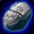
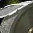
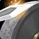
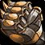
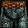
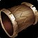
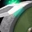
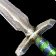
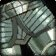

Übersicht
Beste Paarung
Bergbau.
Forever
~200 neue Rezepte, neue Sets und sinnvollere Levelwaffen.
Camping
Schleifrad 20, Amboss 140, Meisterschmiede 300.
Effizienteste Schnellroute
Primärquelle: WoW-Professions. Schmiedehammer sofort kaufen; Schleifsteine für spätere Steps aufheben.
| Skill | Rezept | Crafts | Material | Hinweis | Status |
|---|---|---|---|---|---|
| 1–25 |  Rauer Wetzstein | 30 | 30 Rauer Stein | — | getestet |
| 25–50 |  Rauer Schleifstein | 30 | 60 Rauer Stein | 26 davon aufheben. | getestet |
| 50–67 |  Grober Schleifstein | 36 | 72 Grober Stein | Alle 36 herstellen. | getestet |
| 67–75 |  Runenverzierte Kupferstulpen | 8 | 64 Kupferbarren + 16 Rauer Schleifstein | Ab hier Schmiedehammer nötig. | getestet |
| 75–80 | Runenverzierter Kupfergürtel | 5 | 50 Kupferbarren | Alternative: 5 Silberruten, wenn günstiger. | getestet |
| 80–95 |  Raue Bronzehose | 15 | 90 Bronzebarren | — | getestet |
| 95–100 |  Gemusterte Bronzearmschienen | 5 | 25 Bronze + 10 Grober Schleifstein | — | getestet |
| 100–112 |  Schwerer Schleifstein | 20 | 60 Schwerer Stein | Alle 20 aufheben. | getestet |
| 112–125 | Gemusterte Bronzearmschienen | 13 | 65 Bronze + 26 Grober Schleifstein | — | getestet |
| 125–140 |  Bronzekurzschwert | 24 | 120 Bronze + 96 Schwaches Flux + 48 Mittleres Leder | — | getestet |
| 140–150 | Bronzekriegshammer | 10 | 80 Bronze + 10 Starkes Flux + 10 Mittleres Leder | — | getestet |
| 150–165 | Bronzekriegshammer | 19 | 152 Bronze + 19 Starkes Flux + 19 Mittleres Leder | — | getestet |
| 165–175 | 15 | 90 Eisen + 15 Grüner Farbstoff | — | getestet | |
| 175–185 | Goldene Schuppenarmschienen | 10 | 50 Stahl + 20 Schwerer Schleifstein | — | getestet |
| 185–215 |  Mithrilplattenhose | 36 | 432 Mithrilbarren | Wenn Mithril teuer: dokumentierte Stahl-Alternative nutzen. | getestet |
| 215–225 | Schwere Mithrilbrustplatte | 10 | 160 Mithrilbarren | Alternative Mithrilsporen, falls Muster günstig. | getestet |
| 225–300 | Nach Launch finalisieren | — | — | WoW-Professions warnt, dass viele Classic-Rezepte 25 Punkte früher grau werden. | vorläufig |
Einkaufsliste 1–225
1–150
90× Rauer Stein · 114× Kupferbarren · 72× Grober Stein · 380× Bronzebarren · 60× Schwerer Stein · 58× Mittleres Leder · 96× Schwaches Flux · 10× Starkes Flux
90× Rauer Stein · 114× Kupferbarren · 72× Grober Stein · 380× Bronzebarren · 60× Schwerer Stein · 58× Mittleres Leder · 96× Schwaches Flux · 10× Starkes Flux
150–225
152× Bronzebarren · 19× Starkes Flux · 19× Mittleres Leder · 90× Eisenbarren · 15× Grüner Farbstoff · 50× Stahlbarren · 432× + 160× Mithrilbarren
152× Bronzebarren · 19× Starkes Flux · 19× Mittleres Leder · 90× Eisenbarren · 15× Grüner Farbstoff · 50× Stahlbarren · 432× + 160× Mithrilbarren
Mithril-Alternative
Wenn 432 Mithril teurer sind als ca. 478 Stahl + 135 Schwerer Stein + 68 Massiver Stein, die Stahlroute wählen.
Wenn 432 Mithril teurer sind als ca. 478 Stahl + 135 Schwerer Stein + 68 Massiver Stein, die Stahlroute wählen.
Mining-Synergie
Stahl ab Bergbau 165 selbst verhütten: Eisenbarren + Kohle.
Stahl ab Bergbau 165 selbst verhütten: Eisenbarren + Kohle.
Lehrer
Lehrling
Dane Lindgren
Sturmwind · Zwergenviertel
/mappin 1453 64.1 37.0Experte
Bengus Deepforge
Ironforge · Große Schmiede
/mappin 1455 52.5 41.5Fachmann
Brikk Keencraft
Booty Bay
/mappin 1434 29.0 75.6Geselle
Snarl
Orgrimmar · Tal der Ehre
/mappin 1454 79.6 23.3Experte
Saru Steelfury
Orgrimmar · Tal der Ehre
/mappin 1454 82.3 23.0Fachmann
Brikk Keencraft
Booty Bay
/mappin 1434 29.0 75.6Forever-Hinweise
Classic-Routen nicht blind übernehmen. Viele Rezepte werden früher grau.
Merchant’s Favor liefert neue Waffen-/Rüstungspläne.